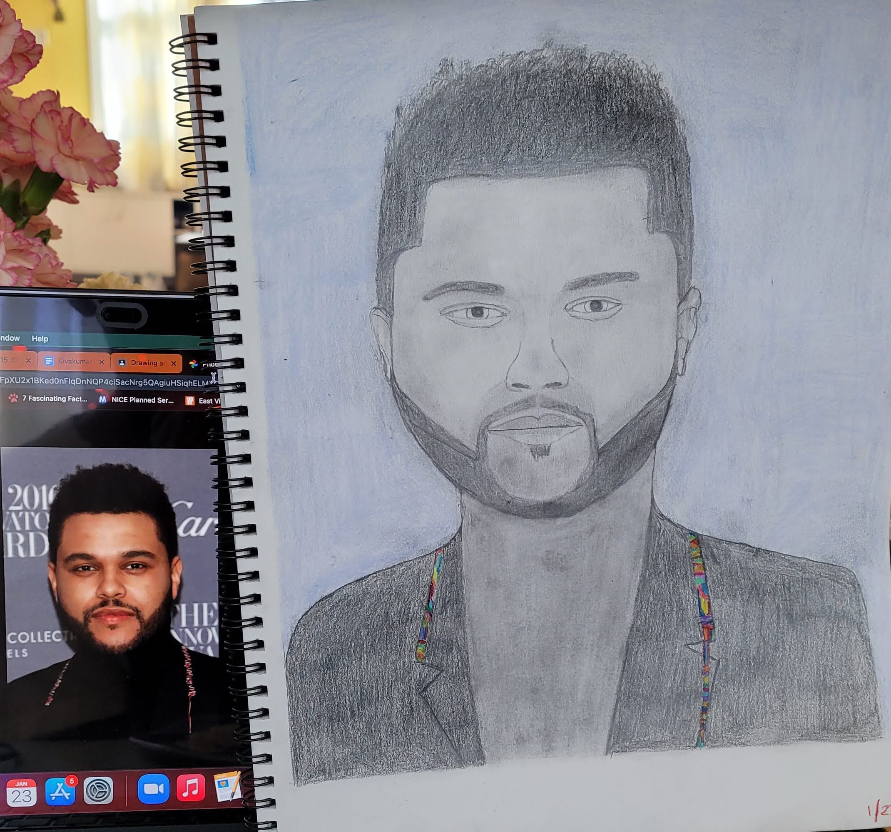
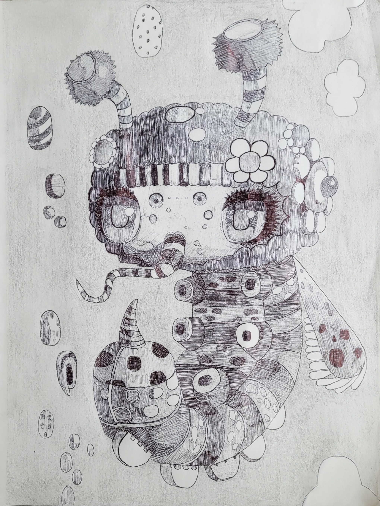
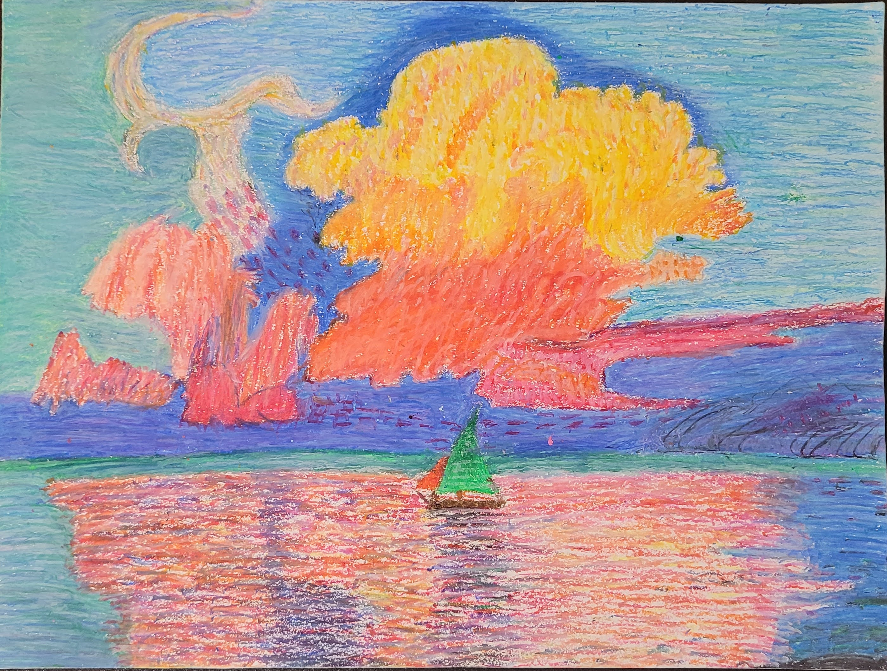
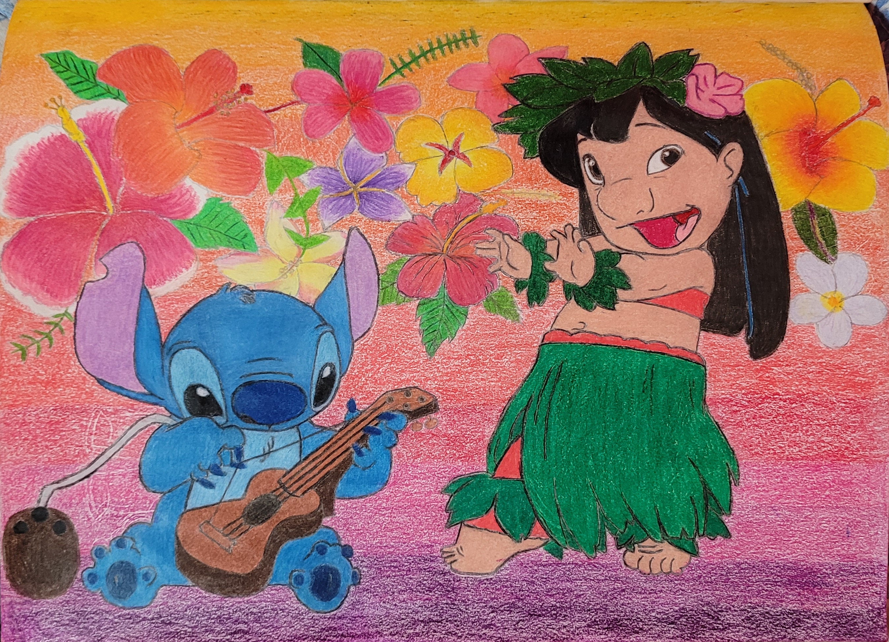
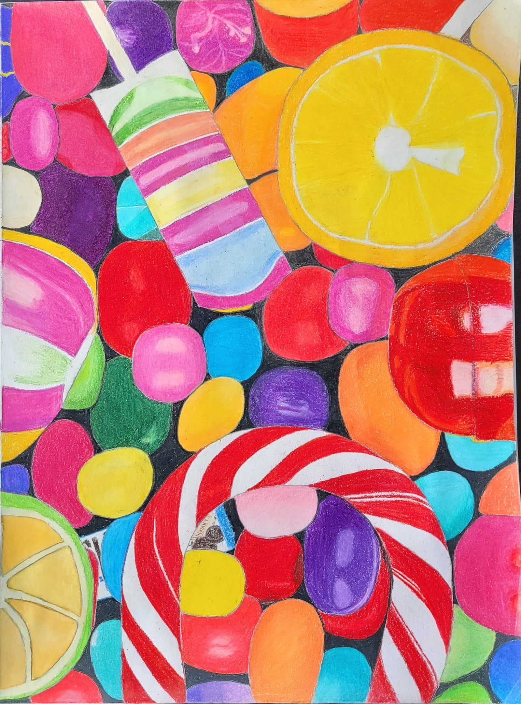

The Weeknd Drawing:
Upon starting Junior Year HS during the pandemic, Siva would finally take Drawing and Painting at the comfort of home. This is because he tried 2 times, but did not get a spot, leaving him furious.
However, his art quest would be disrupted by constant bombarding of homework from his courses, along with being fully remote
Completed within a 2 week span in January 2021, Shiva was required to draw out a black and white, celebrity portrait.
He chose the Weeknd, due to his simple face structure and his amazing music that helped get him through many occasions!
Shiva used standard pencils to draw out the celebrity, along with adding the shading and depth.
Being one of his first portraits, the results were good, but could've been better due to its flatness and slightly awkward structure.
Though a tad funny looking, Shiv liked the result, and would use this to improve his crafts later on.

Alien Bug Drawing:
Although frequently stressed and would often leave this work for last to get the more important and heavy homework out, Art served as an escape tool for Shiva.
He'd would go above and beyond to produce his best artwork, even if it was a task assignment.
Drawn in May 2021, Shiva drew out a grid-line drawing for an art project, where a bug-alien would be drawn on top of the lines.
He used pens strictly, except the background, as the drawing was focused on cross-hatching and pen drawing techniques.
Shiva liked this as it deviates from the constant colorful drawings, and saw this as unique.
After completing, Shiva was shocked with the results, turning to be a 3D-like, detailed, and rather interesting monochrome drawing, leading to this being framed in his house!


Summer 2021 Drawings:
Created in July 2021. As part of his Summer Art HS Program, Shiva was tasked to create an oil-pastel piece.
Using oil pastel, this felt refreshing as Shiva hadn't used pastel since 4th grade, and saw the piece as super colorful, scenic, breath-taking, and overall full of life.
Created within the Summer 2021, Shiva decided to draw out Lilo and Stitch, as a classic cartoon favorite.
Using his growing forte, Shiva drew out the 2 characters along with various flowers and a sunset gradient. Many and him, were in awe due to the detailed, calm, adorable, and scenic drawing.
Because of this, and attending a Summer Art Program hosted by his High School with outstanding Oil-Pastel and Painting artwork, Shiva would be sent to AP Art his Senior Year.

Candy Art:
Drawn through March and April 2021, in his 11th grade-Drawing and Painting class.
Shiva was tasked again, to make a grid-line project and draw various candies on top the grid-lines.
Though challenging at most times, Shiva was able to get this colorful and stunning artwork done, with many in shock of the near-perfection of his drawing.
It would later be displayed in his Senior Year calendar and in his house.
Shiva felt as this piece represents the sweet nature of his personality, and his sweet tooth, an ideal piece that would be utilized in his investigation.
Links to this stage of drawing
Cross Hatching: Drawing Techniques for Beginners.How to Use Oil Pastels